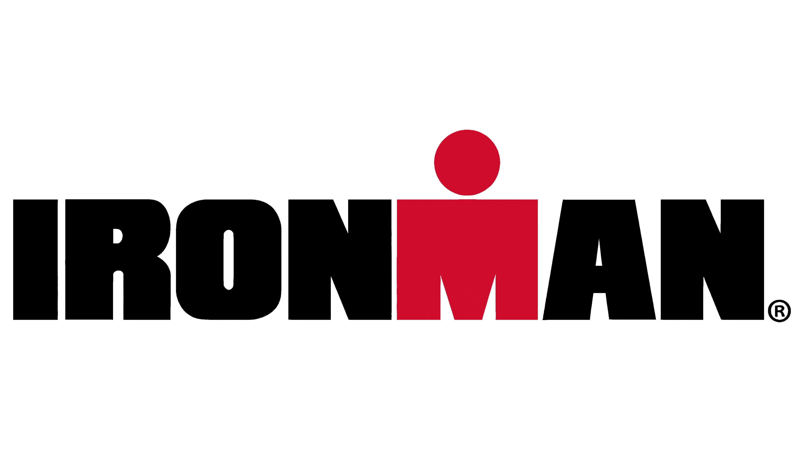

What is an IRONMAN?

An Ironman is a long distance triathalon the consists of 3 endurance events. Athletes start with a 2.4 mile swim, followed with a 112 mile bike ride, then ending with a 26.2 marathon. In total athletes travel 140.6 miles before reaching the final finish line.
Completing an IRONMAN requires training in all the disciplines of swim, bike and run. Athletes need to battle pacing, nutrition, hydration and fatigue through out the race. Each part of the race presents its challenges. Which is why rigorous training for all disciplines are important.
Over this past summer of 2026 I completed an Ironman 70.3, Ironman 70.3 Boise. Which includes the swim, bike and run, just at shorter distances but still than longer an Olympic distance triathalon. The 70.3 distances include a 1.2 mile swim, a 56 mile bike ride and a 13.1 half marathon. Totaling in 70.3 miles hence the name Ironman 70.3. I would like to go through each discipline and what it entails to accomplish this feat and my own personal story of the journey to cross that finish line. and how im preparing to cross the finish line of Ironman Wisconsin in 2027.
Visit the IRONMAN website